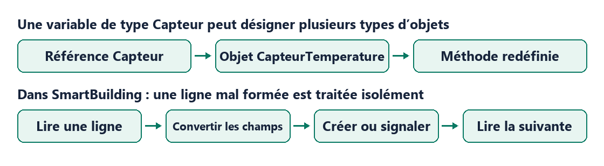

Comprendre le cours
On part de petits programmes, puis on assemble les mêmes mécanismes dans une messagerie et dans l’application SmartBuilding.
1. Que se passe-t-il quand tu lances un programme ?
javac Main.java
java Main- Le JDK fournit les outils de développement, dont le compilateur
javac. Il vérifie le fichier source et produit un fichier.classcontenant du bytecode, un format intermédiaire. - La JVM (machine virtuelle Java) exécute ce bytecode. Un même fichier compilé peut fonctionner sur plusieurs systèmes si la JVM et les dépendances sont compatibles.
- Pour les programmes du cours, la porte d’entrée est
public static void main(String[] args).staticpermet de l’appeler au niveau de la classe,voidindique qu’elle ne renvoie aucune valeur etargscontient les paramètres saisis après le nom de la classe.
Une classe publique Main se place dans Main.java. Les accolades délimitent les blocs, et la plupart des instructions simples finissent par ;. En général une classe prend un nom comme CapteurTemperature, une méthode un nom comme getIdentifiant et une constante un nom comme TARIF_HORAIRE.
Aller plus loin sur les packages et les imports
Un package organise tes classes et évite les collisions de noms. import java.util.ArrayList; permet ensuite d’écrire ArrayList en abrégé. String, Math et System viennent de java.lang, importé automatiquement. Si Main appartient au package tp3, lance java -cp out tp3.Main après avoir compilé vers out.
2. Quelle valeur contient une variable ?
| Exemple | Ce que Java fait |
|---|---|
int q = 7 / 2; | Division entière, résultat 3. |
double q = 7 / 2.0; | Division réelle, résultat 3.5. |
7 % 2 | Reste de la division entière, soit 1. |
String nom = "Alice"; | La variable contient une référence à un objet texte. |
Capteur autre = capteur; | Les deux variables désignent le même objet. Le modifier via l’une se voit via l’autre. |
Les huit types primitifs sont byte, short, int, long, float, double, char et boolean. Une variable locale doit recevoir une valeur avant d’être lue. Le cast (int) 3.9 supprime la partie fractionnaire, tandis que Math.round(3.9) arrondit à 4. Déclarer double q = 7 / 2 ne change pas le calcul à droite, qui vaut déjà 3.
String est immuable, c’est-à-dire que ses méthodes de transformation renvoient une nouvelle chaîne. nom.trim() ne modifie donc pas nom si tu ne réaffectes pas le résultat. Pour comparer le contenu, utilise equals. == compare l’identité des objets pour des références. null représente une référence qui ne désigne aucun objet.
Lire et découper une chaîne sans se tromper d’indice
Pour "Java", length() vaut 4, charAt(0) donne 'J' et substring(1,3) donne "av", car la borne finale est exclue. indexOf retourne l’indice trouvé ou −1. Dans le TP, split(";", -1) garde aussi un dernier champ vide pour que tu puisses le détecter.
3. Quand utiliser un tableau, une liste ou une boucle ?
int[] mesures = {4, 8, 15};
List<Integer> historiques = new ArrayList<>();
for (int valeur : mesures) {
historiques.add(valeur);
}- Un tableau a une taille fixée et se lit avec
mesures[i]. Une liste s’agrandit avecaddet se lit avecget(i). L’indice commence à 0, donc le dernier indice valide est la taille moins 1. Pour parcourir la structure,array.lengthest un champ etliste.size()une méthode. - Pour des types primitifs dans une liste, Java utilise des types objets comme
Integerpourint. Le type entre chevrons impose ce que la liste peut accepter. ifetelsesélectionnent un chemin. Avec&&, si la gauche est fausse, Java n’évalue pas la droite. Par exemple,x != null && x.length() > 0évite d’appeler une méthode sans objet. Unswitchconvient aux choix numérotés du menu.forsert quand tu peux décrire départ, condition et mise à jour.for (Capteur c : capteurs)parcourt directement les éléments.whileteste avant d’entrer,do…whileexécute une première fois avant de tester.breakquitte la boucle etcontinuesaute au tour suivant.
4. Pourquoi créer des objets au lieu de tout mettre dans Main ?
Imagine deux capteurs dans deux salles. La classe décrit les données et les actions communes. Chaque instance a son propre état. Le constructeur est appelé par new. this.piece = piece affecte le paramètre piece à l’attribut de l’objet courant.
class Capteur {
private final String identifiant;
private boolean actif = true;
Capteur(String identifiant) {
this.identifiant = identifiant;
}
public boolean isActif() { return actif; }
public void desactiver() { actif = false; }
}L’encapsulation consiste à rendre les données privées et à proposer des méthodes qui contrôlent leurs changements. final empêche d’affecter de nouveau identifiant. static appartient à la classe entière, ce qui permet d’avoir un compteur partagé avec un numéro distinct stocké dans chaque objet.
Visibilité et passage de paramètres
private limite l’accès à la classe. Le niveau sans mot-clé donne accès aux classes du même package. protected donne aussi accès aux sous-classes dans les conditions prévues par Java. public expose le membre. Java passe les paramètres par valeur : avec un objet, la méthode reçoit une copie de sa référence et peut donc modifier le même objet, mais la réaffectation du paramètre ne change pas la variable de l’appelant.
5. Un capteur, plusieurs comportements

- Dans
Capteur, place ce que tous partagent : identifiant, pièce, état. Hériter, c’est définir une sous-classe commeCapteurTemperature extends Capteur. Avecsuper(identifiant, piece), le constructeur transmet au parent la partie commune. - Définis une opération
analyser()commune. L’attribut température et son contrôle appartiennent à la sous-classe.@Overridesignale que tu redéfinis une méthode héritée avec la même signature. Une surcharge donne au même nom une autre liste de paramètres. - Écris
Capteur c = new CapteurTemperature(...). Le compilateur vérifie queCapteurpossède la méthode appelée. À l’exécution, la JVM sélectionne la version de l’objet concret. Ce polymorphisme permet une seule boucle pour les trois capteurs.
Quand une base doit fournir des méthodes communes et imposer une méthode particulière aux enfants, rends-la abstract. public abstract void analyser(); est une signature sans corps. On instancie une sous-classe concrète, qui doit fournir sa version.
Relis la relation dans les deux sens. Un capteur de température est un capteur. Un segment contient deux points, donc on lui donne deux attributs Point.
6. Où faut-il traiter une exception ?
| Mot-clé | Rôle | Dans SmartBuilding |
|---|---|---|
throw | Lance l’objet exception. | Le capteur refuse une température hors limites. |
throws | Déclare une exception qui peut remonter. | La méthode auxiliaire laisse le menu décider quoi afficher. |
try / catch | Tente une opération et choisit le traitement pour l’erreur reçue. | La saisie « bonjour » donne un message et le menu repasse au choix suivant. |
finally | Exécute le nettoyage à la sortie du bloc, y compris quand une exception remonte. | Fermer un flux que tu as déjà réussi à ouvrir. |
IOException est une exception vérifiée : le compilateur impose de la traiter ou de la déclarer. NumberFormatException et IndexOutOfBoundsException héritent de RuntimeException et sont non vérifiées. Tu peux quand même les traiter lorsqu’une saisie peut les provoquer. Mets les catch spécifiques avant ceux des classes mères.
Dans la classe métier, vérifie d’abord la valeur, puis modifie l’objet seulement si elle est valide. À la frontière de l’application (menu ou lecture de fichier), gère l’erreur et donne une suite à l’utilisateur. Pour un flux, préfère un try avec ressources, comme try (BufferedReader lecteur = Files.newBufferedReader(chemin)). Il ferme automatiquement le lecteur, même en cas d’exception.
Prévoir la méthode appelée et l’état des objets
Dans le TD des figures et le TP SmartBuilding, sépare trois questions. Quels membres vois-tu à partir du type écrit à gauche ? Quelle signature l’appel choisit-il d’après ses arguments ? Quel objet va fournir l’implémentation ? Une surcharge propose plusieurs signatures. Une redéfinition remplace une implémentation héritée pour la même signature.
Prends Figure f = new Cercle(...). L’appel f.afficher() est autorisé si afficher est déclaré par Figure. Si Cercle le redéfinit, c’est le corps de Cercle qui s’exécute. Si une méthode getRayon() existe seulement dans Cercle, la variable déclarée Figure ne permet pas de l’appeler directement. Le choix du type de référence détermine ce qui est accessible même quand l’objet est bien un Cercle.
Dans le TD sur les identifiants, fais deux colonnes sur ton brouillon. Dans la première, note le compteur partagé de classe. Dans la deuxième, note l’identifiant propre à chaque objet. À chaque construction, incrémente une seule fois le compteur, puis copie sa valeur dans le nouvel objet. Vérifie qu’afficher d’abord l’objet 2 puis l’objet 1 ne fait pas changer leurs numéros.
Du cours aux TD et TP
Support croisé · Poly Java, TD1, TP Messagerie, TP Exceptions et comptes rendus SmartBuilding/SmartParking pour les sujets manquants.
| Notion du cours | Où la travailler | Ce que tu dois savoir refaire |
|---|---|---|
| Primitives, références et chaînes | Poly et TD1 | Suivre les valeurs, distinguer identité et égalité et prévoir ce que change une affectation. |
| Conditions, boucles, collections | TD triangle et TP Messagerie | Dériver le nombre d’espaces et d’étoiles, gérer un destinataire par son nom, traiter les limites des pages de résultats. |
| Classes, constructeurs et champs de classe | TD Segment et identifiants | Valider des paramètres, utiliser this et distinguer le champ statique partagé de celui qui appartient à un objet. |
| Abstraction et polymorphisme | TD Figures et compte rendu SmartBuilding | Définir un contrat et choisir le type de référence. Prédire la méthode exécutée pour deux objets différents de la même liste. |
| Exceptions et fichiers | TP Exceptions, questions 1–17 | Choisir où lever et où intercepter. Vérifier qu’une ligne mal formée est signalée et que les lignes valides suivantes sont chargées. |
Questions TD & TP
Teste chaque méthode avec une entrée simple, puis avec la situation qui doit échouer. Les sorties ci-dessous sont les contrôles à obtenir avec les valeurs indiquées.
TD1 · Consolidation de programmation
1 · Afficher le triangle d’étoiles
Énoncé. Afficher un triangle isocèle de hauteur saisie, avec la dernière ligne au bord gauche.
- Lis un entier
hauteuret décide quoi afficher si cette hauteur n’est pas positive. Numérote les lignes à partir de 1. - Sur la ligne
i, écrishauteur - iespaces puis2 * i - 1étoiles, sans retour à la ligne entre les deux. Utilise deux boucles internes ouString.repeat. - Avec une hauteur de 3, attends deux espaces puis une étoile, un espace puis trois étoiles, zéro espace puis cinq étoiles. Avec 8, la dernière ligne affiche 15 étoiles.
for (int i = 1; i <= hauteur; i++) {
System.out.println(" ".repeat(hauteur - i) + "*".repeat(2 * i - 1));
}2 · Manipuler un segment à partir de deux points
Énoncé. Définir les deux constructeurs de Segment, calculer sa longueur, déplacer chaque extrémité et afficher les coordonnées.
- Dans
Point, ajoutegetX()etgetY()pour lire les coordonnées privées. DansSegment, déclare les deux champs privés de typePoint. - Le constructeur à deux points les affecte à l’origine et à l’extrémité. Si chaque segment doit avoir ses propres points, crée une copie des coordonnées à ce moment. Le constructeur à quatre nombres délègue avec
this(new Point(xOr, yOr), new Point(xExt, yExt)). - Calcule
dx = extremite.getX() - origine.getX()et la même différence pourdy. RetourneMath.hypot(dx, dy). Chaque méthode de déplacement appelledeplacesur le bon point, puisafficheaffiche les deux extrémités.
Vérifie. De (0,0) à (3,4), la longueur vaut 5. Après avoir déplacé l’origine de (3,0), elle vaut 4. L’extrémité n’a pas bougé.
3 · Imposer trois opérations à chaque figure
Énoncé. Écrire une classe abstraite Figure qui impose l’affichage, l’homothétie et la rotation.
abstract class Figure {
public abstract void affiche();
public abstract void homothetie(double coeff);
public abstract void rotation(double angle);
}Place seulement la signature dans la base, sans accolades de méthode. Dans une sous-classe concrète, implémente les trois signatures avec @Override. Retire l’une des méthodes pour voir le compilateur signaler le contrat incomplet, puis remets-la.
4 · Donner un numéro unique à chaque nouvel objet
Énoncé. Attribuer 1 au premier objet et incrémenter sans réutiliser les identifiants. Renvoyer le numéro de l’objet et le dernier numéro attribué.
class ObjetNumerote {
private static int dernierIdent;
private final int ident;
ObjetNumerote() { ident = ++dernierIdent; }
int getIdent() { return ident; }
static int getIdentMax() { return dernierIdent; }
}Le compteur est commun, le numéro est propre à chaque objet. Crée trois objets et vérifie les numéros 1, 2, 3, puis vérifie que le premier garde 1 et que ObjetNumerote.getIdentMax() vaut 3.
TP1 · Messagerie instantanée
Concevoir les classes, les conteneurs et l’inscription
Énoncé. Proposer les classes, les méthodes, leur ordre d’implémentation et les structures utilisées.
- Commence par
Utilisateur(id, nom, prénom, courriel) etMessage(id, expéditeur, destinataire, texte). Rends les champs privés. Un id sert à retrouver un objet même si l’affichage est filtré. - Dans le service, stocke les utilisateurs par identifiant avec une
LinkedHashMap<Integer, Utilisateur>si tu veux retrouver directement un id et garder l’ordre d’inscription. Prévois par destinataire uneArrayList<Message>à laquelle on ajoute les messages en fin de liste. - Implémente l’inscription avant l’envoi. Nettoie le nom et le prénom avec
trim, vérifie les champs obligatoires, puis rejette un doublon sur le couple nom-prénom. Deux personnes ayant le même nom et des prénoms différents restent possibles. Attribue le numéro et crée la boîte seulement après ces vérifications. - Teste deux inscriptions valides, puis une inscription avec le même couple nom-prénom et une avec un champ vide. Vérifie que les échecs ne modifient pas la liste des inscrits.
Envoyer, chercher, paginer et supprimer après lecture
Énoncé. Gérer la sélection du destinataire au-delà de 20 inscrits, afficher les messages par pages de 20 et supprimer celui qui est lu.
- Vérifie que l’expéditeur et le destinataire existent et sont distincts. Au-delà de 20 utilisateurs, filtre les candidats par nom ou par couple nom-prénom, puis affiche leurs vrais identifiants. Lors de la sélection, vérifie que l’id choisi correspond à un destinataire autorisé.
- Ajoute un message valide à la fin de la boîte du destinataire. Un ajout à la fin, suivi d’une lecture de gauche à droite, donne l’ordre d’arrivée. Donne un identifiant au message lui-même pour distinguer deux messages du même expéditeur.
- Pour la page
pnumérotée depuis 0, l’intervalle va dep * 20inclus àMath.min(debut + 20, boite.size())exclu. Vérifie d’abord que la page existe. Parcourir les entrées pour remplir la page ne change pas la boîte. - Pour consulter, recherche l’id dans la boîte du destinataire courant. Affiche le contenu puis supprime uniquement ce message. Le contrôle doit précéder la suppression. Une saisie non numérique, un id inconnu, une page absente ou un envoi invalide donnent un message et un retour au menu.
Test global. Avec 21 messages dans une boîte, regarde les pages 20 puis 1. Lis un message et vérifie que lui seul disparaît. Recommence avec le même id et vérifie que le menu reste utilisable.
SmartBuilding · Héritage et polymorphisme
Cette partie s’appuie sur le déroulé de ton compte rendu de TP2. Le sujet original n’a pas été retrouvé dans les fichiers disponibles.
Construire les capteurs, puis les traiter dans la même boucle
Énoncé. Faire une première classe Capteur, puis spécialiser température, luminosité et présence.
- Commence avec
identifiant,pieceetactif. Dans le constructeur de base, affecte l’identité et la pièce, et initialiseactifàtrue. Vérifie avec C01 dans « Salle A », puis désactive et relis l’état. - Pour chaque type de mesure, appelle
super(identifiant, piece)dans le constructeur et ajoute son champ. La température et la luminosité sont numériques. La présence est un booléen. Ajoute les accesseurs et redéfinis l’affichage quand la mesure doit être incluse. - Place les trois objets dans une liste
ArrayList<Capteur>. Essaiec.analyser()dans une boucle. L’affichage propre à chaque mesure confirme que Java appelle le corps de la sous-classe. - Une fois les sous-classes testées, rends
Capteurabstraite et imposeanalyser()si c’est le contrat retenu. Remplace les créations directes deCapteurpar celles des sous-classes.
TP3 · Exceptions, fichiers et menu SmartBuilding
1 à 3 · Intercepter une mauvaise saisie ou un numéro absent
Énoncé. Tester la saisie d’une température, puis distinguer une mauvaise conversion et un indice hors limites.
- Lis une ligne avec
nextLine()puis appelleDouble.parseDouble(texte.trim()). « 23.5 », « 18 » et « -4.5 » se convertissent. « bonjour », « abc » et « 25,3 » échouent avec ce parseur, qui attend un point décimal. - Entoure la conversion et l’action qui en dépend d’un
try, puis affiche « veuillez saisir un nombre valide » dans lecatch (NumberFormatException e). L’objet ne doit être modifié qu’après une conversion réussie. - Liste les trois capteurs avec les indices 0, 1, 2. Lis le numéro avec
Integer.parseInt. L’entrée « bonjour » échoue à la conversion, alors que 15 se convertit et provoqueIndexOutOfBoundsExceptionsurget(15). Intercepte-les séparément, ou vérifie les bornes avantget.
4 à 8 · Règles de mesure, propagation et hiérarchie
Énoncé. Refuser les valeurs incohérentes, empêcher l’analyse d’un capteur inactif et transmettre les détails de l’erreur à l’appelant.
- Une température est valide entre −50 et 80 inclus. La luminosité doit être positive ou nulle. Teste 22.5, −70, 150, puis 600, 0 et −50. Contrôle avant d’affecter le champ. Écarte aussi
NaNet les infinis si tu acceptes des saisiesdouble. - Définis
CapteurException extends Exception, puisCapteurInactifExceptionetValeurCapteurInvalideExceptionqui en héritent. DansanalyserCapteur, teste l’état et lance la première si nécessaire. Déclarethrows CapteurInactifExceptionsi la méthode laisse l’erreur remonter. - Dans le menu, tente une analyse sur un capteur actif puis désactivé. Intercepte d’abord les types précis si tu veux des messages différents. Un seul
catch (CapteurException e)convient quand tu veux traiter toutes les erreurs de capteur de la même façon. - Dans
ValeurCapteurInvalideException, conserve l’identifiant et la valeur reçue dans des champs et expose des accesseurs. Aprèst1.setTemperature(150), le bloc de gestion doit pouvoir afficher T01 et 150.0 à partir de l’exception.
9 à 12 · Sauvegarder et recharger les capteurs
Énoncé. Sauvegarder dans capteurs.txt, garantir la fermeture, puis recréer les capteurs et traiter le fichier absent.
TEMPERATURE;T01;Salle A;true;21.5
LUMINOSITE;L01;Hall;true;640.0
PRESENCE;P01;Salle B;true;true- Sérialise un objet par ligne avec les cinq champs du sujet. Garde le même encodage et le même ordre des champs au chargement. Si les champs texte proviennent d’une saisie, refuse les points-virgules et retours à la ligne ou définis une règle d’échappement.
- Teste d’abord une écriture simple. Avec
finally, ferme seulement le flux déjà ouvert. Compare ensuite avectry (var writer = Files.newBufferedWriter(chemin))et écris les lignes dans le bloc. Si une écriture échoue, le flux est fermé et l’IOExceptionpeut remonter. - Au chargement, lis ligne à ligne et reconstruis l’objet en fonction du premier champ. Applique la mesure et l’état avant d’ajouter le capteur à la collection. Affiche les trois objets obtenus. Teste un chemin qui n’existe pas. Avec
Files.newBufferedReader, un chemin absent se signale normalement parNoSuchFileException, sous-classe d’IOException.
13 à 17 · Garder les lignes valides et relancer le menu
Énoncé. Distinguer ligne mal formée, cause d’origine et erreur de fichier, puis réunir les opérations dans le menu final.
- Compte les vraies lignes dès
readLine(). Faisligne.split(";", -1), exige cinq champs, vérifie l’état textueltrueoufalsepuis sélectionne le type de capteur. Convertis la mesure avec le bon parseur et passe par les mêmes validations que pour une modification au clavier. - Crée
FormatCapteurExceptionavec le numéro, la ligne et la cause. Si la conversion lanceNumberFormatException, passe-la au constructeur parent avecsuper(message, cause).getCause()permet ensuite de savoir pourquoi le format a échoué. - Dans la boucle, intercepte seulement l’erreur de format autour de la ligne courante. Compte-la et continue. Intercepte l’erreur de fichier à l’extérieur. Pour le scénario de la partie 14, attends T01, L01, P01 et T03 chargés, et une ligne incorrecte signalée au numéro 3.
- Dans le menu final, lis le choix dans une boucle et sépare affichage, modification, activation, désactivation, analyse, chargement et sauvegarde. Teste une option invalide, un capteur absent, une mesure invalide, un capteur désactivé et un fichier absent. Après chacun de ces cas, vérifie que le menu se réaffiche et que 0 permet toujours de quitter.
SmartParking · Mobiliser les mêmes notions dans un autre projet
Consigne reconstituée à partir du compte rendu. Modélise les voitures et motos avec un tarif propre à chacune, puis traite un ajout quand le parking a atteint sa capacité.
Le déroulé ci-dessous est repris de ton compte rendu SmartParking. Le sujet original n’a pas été retrouvé dans les fichiers disponibles.
- Dans la classe abstraite
Vehicule, mets l’immatriculation, la marque et la durée. Vérifie que la durée est strictement positive avant de l’enregistrer. Les classesVoitureetMotoimplémentent leur proprecalculerPrix(). - Dans
Parking.ajouterVehicule, compare la taille à la capacité avant de modifier la liste. Si elle est atteinte, lanceParkingCompletException. Parcours ensuite la liste avec des référencesVehiculeet appellecalculerPrix(). - Avec les tarifs de l’exercice, une voiture de 3 h coûte 6 € et une moto de 2 h coûte 2 €. Avec une capacité de 2, la troisième insertion doit échouer, sans modifier les deux premières entrées.